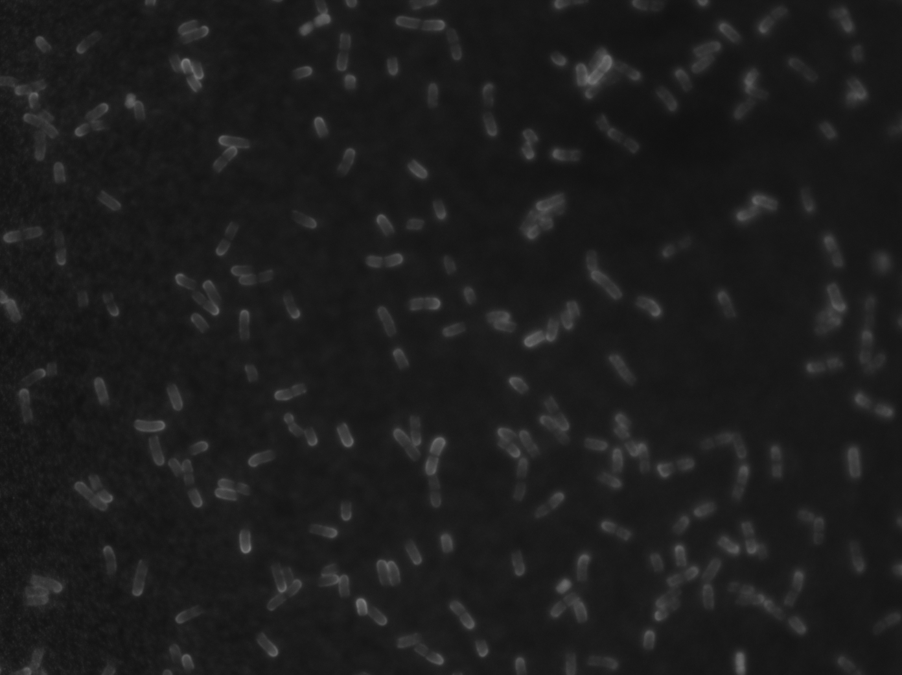

Gram-negative-bacterium-type cell wall
The relatively thin peptidoglycan layer of a Gram-negative cell envelope, located in the periplasm between the cytoplasmic and outer membranes and physically connected to the outer membrane by lipoproteins. [DOI:10.1101/cshperspect.a000414]

NCBITaxon:562) · Marije van 't Wout, Dani Heesterbeek; via BioImage Archive · CC0 · source: BIOIMAGE_ARCHIVE S-BIAD2294:Figure 3/Replicate 1 (MW240530) 8 minutes/Series002_1.tif#channel=3 · DOI:10.6019/S-BIAD2294Components
| Component | Type | Part of / acts on | Grounding | Genes | Stoichiometry | Essential | Role |
|---|---|---|---|---|---|---|---|
| thin peptidoglycan sacculus | PEPTIDOGLYCAN | part of | ESSENTIAL | Provides mechanical integrity within the periplasm.
| |||
| peptidoglycan–outer-membrane lipoprotein links | PROTEIN | part of | CONDITIONAL | Couple the peptidoglycan layer mechanically to the outer membrane in many diderms.
|
Taxonomic distribution
NCBITaxon:1224Pseudomonadota — COMMON: Canonical diderm architecture; envelope variants occur across bacteria. [DOI:10.1101/cshperspect.a000414]
Canonical examples
NCBITaxon:562Escherichia coli — Reference organism for Gram-negative envelope architecture. [DOI:10.1101/cshperspect.a000414]
Functions
- cell-shape maintenance within a diderm envelope
DOI:10.1101/cshperspect.a000414The peptidoglycan wall is the stress-bearing envelope layer.
Datasets
- Bactericidal Membrane Attack Complex formation initiates at the new pole of E. coli (
S-BIAD2294) · OTHER · OTHER
Organism: NCBITaxon:562 Escherichia coliDirect BioImage Archive submission under CC0 (https://creativecommons.org/publicdomain/zero/1.0/); per-accession terms verified on 2026-09-01.
Evidence
DOI:10.1101/cshperspect.a000414The bacterial cell envelope.
Curation history
2026-08-30T19:30:00Zcodex · CREATED_RECORD — Added as a literature-backed foundational seed. Identity checked against the 2026-07-01 Gene Ontology release; requires human review.2026-08-31T06:12:34Zclaude · SET_COMPONENT_ROLE — component_role became required (#77) so the constituent/machinery distinction is machine-readable rather than prose. Set per component; ASSOCIATED_MACHINERY only where the protein acts on the already-assembled structure.2026-09-01T20:06:52Zbioimage_archive · ADD_IMAGE — Added S-BIAD2294 and added exact file 'Figure 3/Replicate 1 (MW240530) 8 minutes/Series002_1.tif', channel 3; per-accession licence, manifest identity, byte count and source taxon mapping verified at import.
Source: data/structures/envelope/gram_negative_bacterium_type_cell_wall.yaml